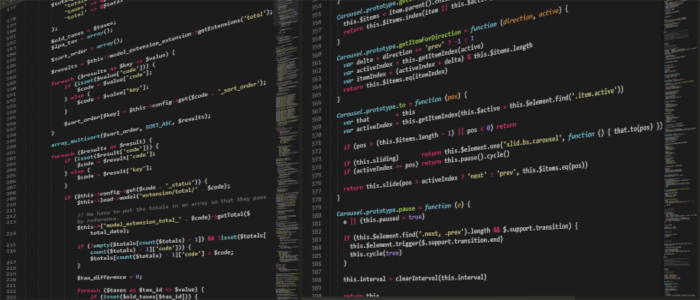

Quem são os Devs?
Devs é uma abreviação da palavra inglesa developers, que significa desenvolvedores. Esse termo é usado para se referir aos profissionais responsáveis por criar, programar, testar e manter softwares, aplicativos, sites e sistemas computacionais.
Os devs utilizam linguagens de programação, como HTML, CSS, JavaScript, Python e Java, para transformar ideias e necessidades em soluções tecnológicas. Eles podem atuar em diferentes áreas, como desenvolvimento web, aplicativos móveis, jogos, sistemas empresariais e inteligência artificial.
Além de escrever códigos, os desenvolvedores também resolvem problemas, corrigem erros e trabalham em equipe para criar produtos digitais que fazem parte do nosso dia a dia.
Quem são os Desenvolvedores Front-end?
Os desenvolvedores Front-end são os profissionais responsáveis pela parte visual e interativa de sites e aplicações, ou seja, tudo aquilo que o usuário vê e utiliza na tela. Eles transformam o design de uma interface em páginas funcionais, garantindo que o conteúdo seja organizado, responsivo e fácil de usar.
Esses profissionais trabalham principalmente com tecnologias como HTML, CSS e JavaScript, criando elementos como menus, botões, formulários, animações e layouts adaptáveis para diferentes dispositivos, como computadores, tablets e celulares.
Além da programação, os desenvolvedores "front-end" também se preocupam com a experiência do usuário, o desempenho das páginas e a acessibilidade, buscando oferecer uma navegação agradável e eficiente para todos os usuários.
Quem são os Desenvolvedores Back-end?
Os desenvolvedores Back-end são os profissionais responsáveis pela parte interna dos sistemas e aplicações, ou seja, tudo aquilo que acontece nos bastidores e que não é visto diretamente pelos usuários. Eles desenvolvem a lógica do sistema, processam informações e garantem que os dados sejam armazenados e recuperados corretamente.

Esses profissionais trabalham com linguagens de programação como Python, Java, PHP, C# e JavaScript(Node.js), além de bancos de dados e servidores. Suas atividades incluem a criação de APIs, o gerenciamento de dados, a autenticação de usuários e a comunicação entre o sistema e o banco de dados.
O trabalho do desenvolvedor back-end é essencial para o funcionamento de sites, aplicativos e sistemas, pois ele garante que as funcionalidades executadas pelo usuário no front-end sejam processadas de forma segura, eficiente e confiável.
Git e GitHub para Devs
A importância do Git e do GitHub para os Desenvolvedores
O Git e o GitHub são ferramentas fundamentais no trabalho dos desenvolvedores front-end e back-end. O Git é um sistema de controle de versão que permite registrar e acompanhar todas as alterações realizadas no código de um projeto, possibilitando que os desenvolvedores retornem a versões anteriores caso ocorram erros ou problemas.
Já o GitHub é uma plataforma que utiliza o Git para armazenar projetos na nuvem, permitindo o compartilhamento de código e a colaboração entre equipes. Por meio dele, vários desenvolvedores podem trabalhar simultaneamente em um mesmo projeto, organizando alterações e integrando novas funcionalidades de forma segura.
Além de facilitar o trabalho em equipe, o Git e o GitHub também são importantes para o aprendizado e para a carreira profissional, pois permitem que os desenvolvedores publiquem seus projetos, criem portfólios e demonstrem suas habilidades para empresas e recrutadores. Dessa forma, essas ferramentas se tornaram indispensáveis no desenvolvimento moderno de software.
se tiver mais interesse acesse o canal do curso em vídeo e faça os curso on-line